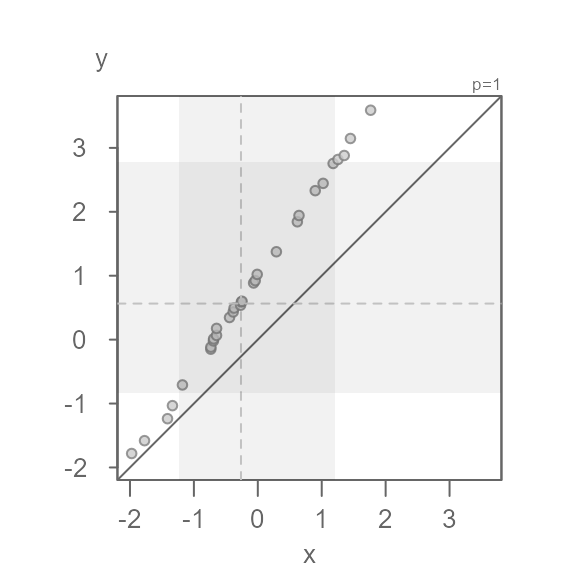
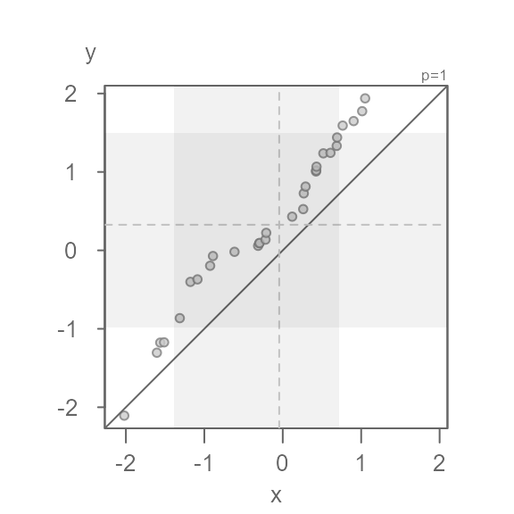
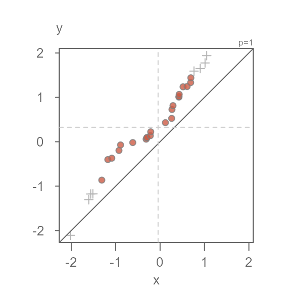
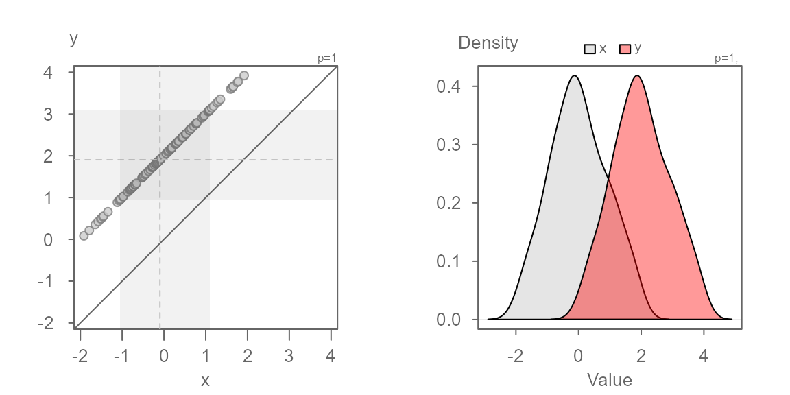
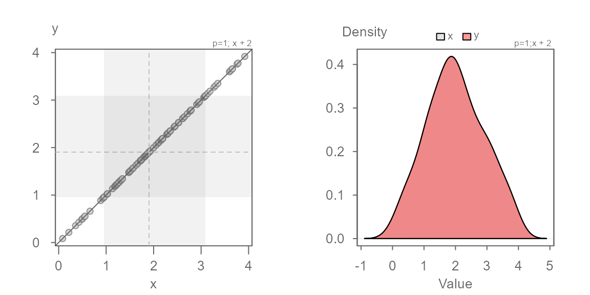
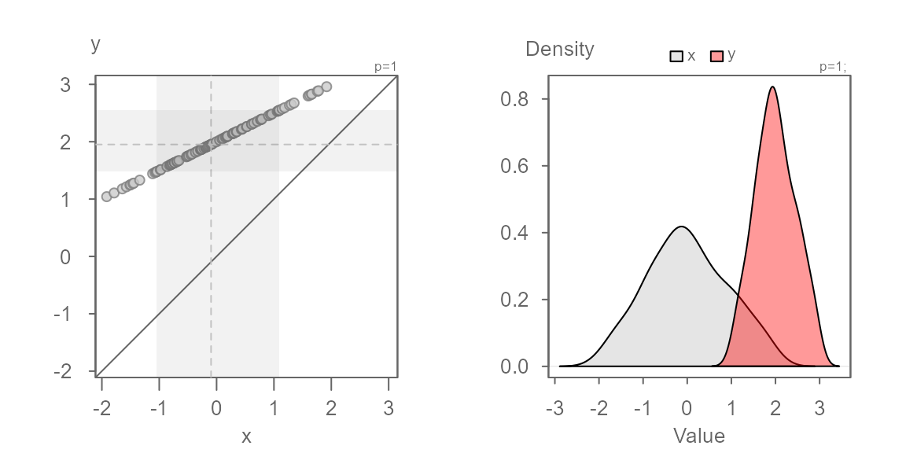
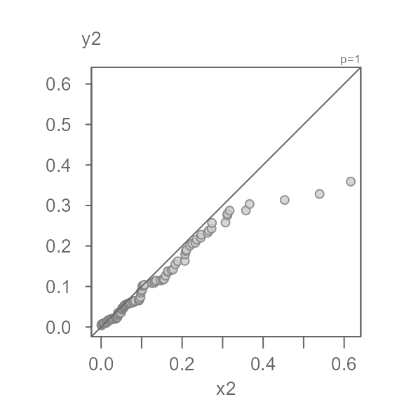
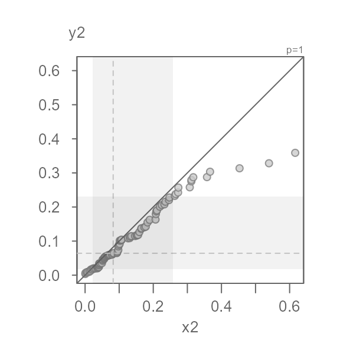
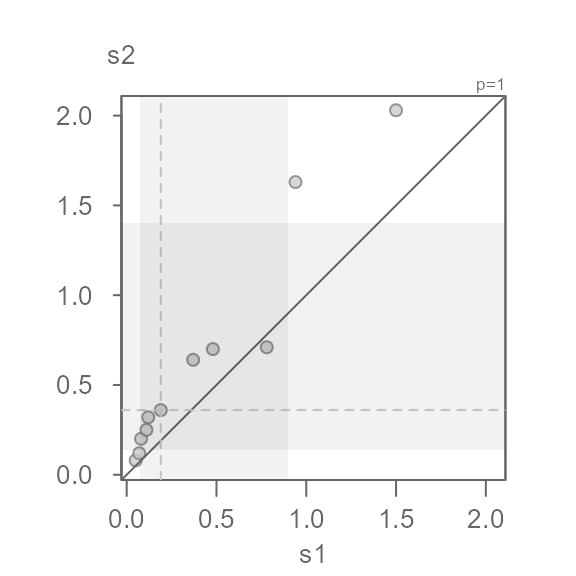
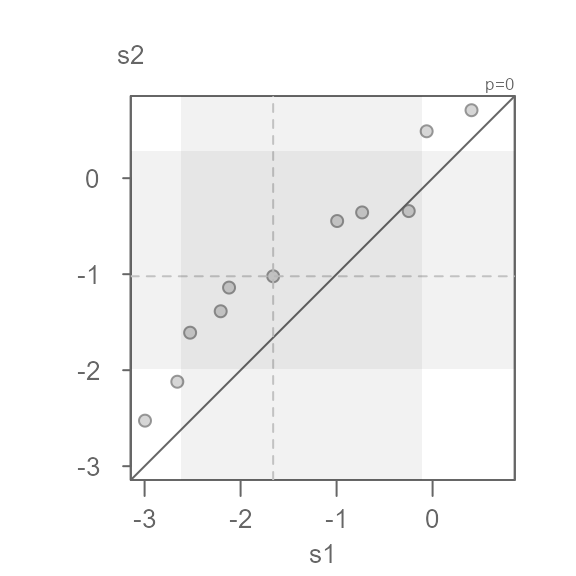

Introduction
The empirical quantile-quantile plot (QQ plot) is probably one of the most underused and least appreciated plots in univariate analysis. It is used to compare two distributions across their full range of values. It is a generalization of the boxplot in that it does not limit the comparison to just the median and upper and lower quartiles. In fact, it compares all values by matching each value in one batch to its corresponding quantile in the other batch. The sizes of each batch need not be the same. If they differ, the larger batch is interpolated down to the smaller batch’s set of quantiles.
A QQ plot does not only help visualize the differences in distributions, but it can also model the relationship between both batches. Note that this is not to be confused with modeling the relationship between a bivariate dataset where the latter pairs up the points by observational units whereas a QQ plot pairs up the values by their matching quantiles.
Anatomy of the eda_qq plot

#> [1] "Suggested offsets:y = x * 1.4573 + (0.9914)"- Each point represents matching quantiles from each batch.
- The shaded boxes represent each batch’s interquartile range (mid 50% of values).
- The Solid dashed lines inside the shaded boxes represent each batch’s medians.
- The lightly shaded dashed dots represent each batch’s 12.5th and 87.5th quantiles (i.e. they show the ends of the mid 80% of values).
- The upper right-hand text indicates the power
transformation applied to the both batches (default is a power of
1which is original measurement scale). If a formula is applied to one or both batches, it too will appear in the upper right-hand text. - The
eda_qqwill also output the suggested relationship between the y variable and the x variable in the console. It bases this on each batch’s interquartile values. - If the output is assigned to a new object, that object will store a
list of the following values: the
xvalue (interpolated if needed), theyvalue (interpolated if needed), the power parameter, the formula applied to x variable, and the formula applied to y variable.
An overview of some of the function arguments
Data type
The function will accept a dataframe with a values column
and a group column, or it will accept two separate vector
objects. For example, to pass two separate vector object,
x and y, type:
If the data are in a dataframe, type:
dat <- data.frame(val = c(x, y), cat = rep(c("x", "y"), each = 30))
eda_qq(dat, val, cat)Suppressing the plot
You can suppress the plot and have the x and y values outputted to a list. If the batches did not match in size, the output will show their interpolated values such that the output batches match in size.
The output will also include the power parameter applied to both
batches as well as any formula applied to one or both batches
(fx is the formula applied to the x variable and
fy is the formula applied to the y variable).
out <- eda_qq(x,y, plot = FALSE)
#> [1] "Suggested offsets:y = x * 1.12 + (0.5619)"
out
#> $x
#> [1] -2.0207122 -1.6048333 -1.5620907 -1.5128732 -1.3126378 -1.1770882
#> [7] -1.0871906 -0.9258832 -0.8896555 -0.6152073 -0.3140113 -0.2996734
#> [13] -0.2954234 -0.2199849 -0.2108781 0.1202060 0.2608893 0.2680445
#> [19] 0.2910663 0.4239690 0.4262605 0.4301416 0.5176361 0.6085180
#> [25] 0.6880919 0.6929772 0.7640838 0.9037644 1.0124869 1.0503544
#>
#> $y
#> [1] -2.10710669 -1.30465821 -1.17618932 -1.17253191 -0.86423268 -0.40162859
#> [7] -0.37002087 -0.19629536 -0.07210822 -0.01829722 0.05826287 0.09105884
#> [13] 0.09371398 0.13698992 0.22318119 0.43006689 0.52597363 0.72665767
#> [19] 0.81351407 1.00612388 1.01831440 1.06713353 1.23708449 1.24360530
#> [25] 1.33232007 1.43973056 1.59125312 1.64852115 1.77464625 1.93823390
#>
#> $p
#> [1] 1
#>
#> $fx
#> NULL
#>
#> $fy
#> NULLSetting the grey box and dashed line parameters
The grey box highlights the interquartile ranges for both batches.
Its boundary can be modified via the b.val argument.
Likewise, the lightly shaded dashed dots that highlight the mid 80% of
values can be modified via the l.val argument.
For example, to highlight the mid 68% of values using the grey boxes and the mid 95% of values using the lightly shaded dashed dots, type:

You can suppress the plotting of the grey box and the lightly shaded
dashed dots by setting q = FALSE. This does not affect the
median dashed lines.
Applying a formula to one of the batches
You can apply a formula to a batch via the fx argument
for the x-variable and the fy argument for the y-variable.
The formula is passed as a text string. For example, to add
0.5 to the x values, type:
eda_qq(x, y, fx = "x + 0.5")Quantile type
There are many different quantile algorithms available in R. To see
the full list of quantile types, refer to the quantile help page:
?quantile. By default, eda_qq() adopts
q.type = 5. In general, the choice of quantiles will not
really matter, especially for large datasets. If you want to adopt R’s
default type, set q.type = 7.
Point symbols
The point symbol type, color and size can be modified via the
pch, p.col (and/or p-fill) and
size arguments. The color can be either a built-in color
name (you can see the full list by typing colors()) or the
rgb() function. If you define the color using one of the
built-in color names, you can adjust its transparency via the
alpha argument. An alpha value of
0 renders the point completely transparent and a value of
1 renders the point completely opaque. The point symbol can
take on two color parameters depending on point type. If
pch is any number between 21 and 25, p.fill
will define its fill color and p.col will define its border
color. For any other point symbol type, the p.fill argument
is ignored.
Here are a few examples:
eda_qq(x, y, p.fill = "bisque", p.col = "red", size = 1.2)
eda_qq(x, y, pch = 16, p.col = "tomato2", size = 1.5, alpha = 0.5)
eda_qq(x, y, pch = 3, p.col = "tomato2", size = 1.5)
Interpreting a QQ plot
To help interpret the following QQ plots, we’ll compare each plot to matching kernel density plots.
Identical distributions
In this first example, we will generate a QQ plot of two identical distributions.
When two distributions are identical, the points will line up along
the x=y line as shown above. This will also generate
overlapping density plots as seen on the right plot.
Additive offset
We will work off of the same batches, but this time we will offset
the second batch, y, by 2. This case is
referred to as an additive offset.
You’ll note that the points are parallel to the x=y
line. This indicates that the distributions have the exact same shape.
But, they do not fall on the x=y line–they are offset by
+2 units when measured along the y-axis, as expected. We
can confirm this by adding 2 to the x
batch:
The points overlap the x=y line perfectly. The density
distribution overlap exactly as well.
Multiplicative offset
Next, we explore two batches that share the same central value but
where the second batch is 0.5 times that of the first. This
case is referred to as a multiplicative offset.
Here, the series of points are at an angle of the x=y
line yet, you’ll note that the points follow a perfectly straight line.
This suggests a multiplicative offset with no change in location. This
indicates that the “shape” between the batches are similar, but that one
is “wider” than the other. Here, y is half as wide as
x. We can also state that x is twice as wide
as y
We know the multiplicative offset since we synthetically generated
the values x and y. But in practice eyeballing
the multiplier from the plot is not straightforward. We can use the
suggested offset of 0.5 displayed in the console to help
guide us. We can also use the angle between the points and the
x=y line to judge the direction to take when choosing a
multiplier. If the points make up an angle that is less than the
x=y line, we want to choose an x multiplier
that is less than 1. If the angle is greater than the
x=y line, we want to choose a multiplier that is greater
than 1.
Here, we know that the multiplier is 0.5. Let’s confirm
this with the following code chunk:
Both additive and multiplicative offset
In this next example, we add both a multiplicative and an additive offset to the data.

We now see both a multiplicative offset (the points form an angle to
the x=y line) and an additive offset (the points do not
intersect the x=y line). This suggests that the
width of the batches differ and that their values are offset by
a constant value across the full range of values. It’s usually best to
first identify the multiplicative offset such that the points are
rendered parallel to the x=y line. Once the multiplier is
identified, we can then identify the additive offset.

No surprise, the multiplier of 0.5 renders the series of
points parallel to the x=y line. We can now eyeball the
offset of +2 when measuring the distance between any of the
points and the x=y line when measured along the y-axis.
We can model the relationship between y and x as \(y = x * 0.5 + 2\).
Batches need not be symmetrical
So far, we have worked with a normally distributed dataset. But note that any distribution can be used in a QQ plot. For example, two equally skewed distributions that differ by their central values will generate points that are perfectly lined up.

Since both distributions have an identical shape, the points will follow a straight line regardless of the nature of the shape (skewed, unimodal, bimodal, etc…)
Perfectly alligned points are rare
Note that with observational data, two batches pulled from the same underlying population will seldom follow a perfectly straight line. For example, note the meandering pattern generated by the following QQ plot when both batches are pulled from a same Normal distribution.

Note how the points not only meander about the x=y line,
but some of the points tail off near the end of the distribution.
Power transformation
The eda_qq function allows you to apply a power
transformation to both batches. Note that transforming just one batch
makes little sense since you end up comparing two batches measured on a
different scale. In this example, we make use of R’s
Indometh dataset where we compare indometacin plasma
concentrations between two test subjects.
s1 <- subset(Indometh, Subject == 1, select = conc, drop = TRUE) # Test subject 1
s2 <- subset(Indometh, Subject == 2, select = conc, drop = TRUE) # Test subject 2
eda_qq(s1, s2)The QQ plot’s grey boxes are shifted towards lower values. The grey
boxes show the mid 50% of values for each batch (aka, the IQR range).
When the IQR is shifted towards lower values or higher values, this
suggests skewed data. Another telltale sign of a skewed dataset is the
gradual dispersion of the points in any of the two diagonal directions.
Here, we go from a relatively high density of points near the lower
values and a lower density of points near higher values. This does not
preclude us from identifying multiplicative/additive offsets, but many
statistical procedures benefit from a symmetrical distribution. Given
that the values are measures of concentration, we might want to adopt a
log transformation. The power transformation is defined
with the p argument (a power parameter value of
0 defines a log transformation).
eda_qq(s1, s2, p = 0)#> [1] "Suggested offsets:y = x * 0.8508 + (0.3914)"This seems to do a decent job of symmetrizing both distributions.
Note that the suggested offset displayed in the console applies to the transformed dataset. We can verify this by applying the offset to the x batch.
eda_qq(s1, s2, p = 0, fx = "x * 0.8501 + 0.3902")
We can characterize the differences in indometacin plasma concentrations between subject 1 and subject 2 as \(log(conc)_{s2} = log(conc)_{s1} * 0.8501 + 0.3902\)
The Tukey mean-difference plot
The Tukey mean-difference plot is simply an
extension of the QQ plot whereby the plot is rotated such that the
x=y line becomes horizontal. This can be useful in helping
identify subtle differences between the point pattern and the line. The
plot is rotated 45° by mapping the difference between both batches to
the y-axis, and mapping the mean between both batches to the
x-axis. For example, the following figure on the left (the QQ plot)
shows the additive offset between both batches but it fails to clearly
identify the multiplicative offset. The latter can be clearly seen in
the Tukey mean-difference plot (on the right) which is invoked by
setting the argument md = TRUE.

A working example
Many datasets will have distributions that differ not only additively
and/or multiplicatively, but also by their general shape. This may
create complex point patterns in your QQ plot. Such cases can be
indicative of different processes at play for different ranges
of values. We’ll explore such a case using wat95 and
wat05 dataframes available in this package. The data
represent derived normal temperatures for the 1981-2010 period
(wat95) and the 1991-2020 period (wat05) for
the city of Waterville, Maine (USA). We will subset the data to the
daily average normals, avg:
old <- wat95$avg # legacy temperature normals
new <- wat05$avg # current temperature normalsWe will now compare their distributions.
out <- eda_qq(old, new)
At first glance, the batches do not seem to differ. But how close are
the points to the x=y line? We will rotate the plot to zoom
in on the x=y line by setting md = TRUE.
out <- eda_qq(old, new, md = TRUE)
This view is proving to be far more insightful. Note that for most of
the data, we have an overall offset of 0.5 suggesting that the new
normals are about 0.5°F. warmer. We could stop there, but the pattern
observed in the Tukey mean-difference plot is far from random. In fact,
we can break the pattern into three distinct ones at around 35°F and
50°F. We will categorize these groups as low,
mid and high values.
This next chunk of code will generate three separate QQ plots for each range of values.
labs <- c("low", "mid", "high")
out$avg <- (out$x + out$y) / 2
out <- as.data.frame(out[c(1:2,6)])
out2 <- split(out, cut(out$avg, c(min(out$avg), 35, 50, max(out$avg)),
labels = labs, include.lowest = TRUE))
sapply(labs, FUN = \(x) {eda_qq(out2[[x]]$x, out2[[x]]$y ,
xlab = "old", ylab = "new", md = T)
title(x, line = 3, col.main = "orange")} )#> [1] "Suggested offsets:y = x * 0.9507 + (1.6599)"
#> [1] "Suggested offsets:y = x * 1.047 + (-1.6502)"
#> [1] "Suggested offsets:y = x * 0.9938 + (0.9268)"The suggested offsets are displayed in the console for each group.
It is important to note that we are splitting the paired values generated from the earlier
eda_qqfunction (out$avg) and not the values from the original datasets (oldandnew). Had we split the original data prior to combining them witheda_qq, we could have generated different patterns in the QQ and Tukey plots. This is because this approach could generate different quantile pairs.
Next, we’ll adopt the suggested offsets generated in the console.
xform <- c("x * 0.9506 + 1.661",
"x * 1.0469 - 1.6469",
"x * 0.9938 + 0.9268")
names(xform) <- labs
sapply(labs, FUN = \(x) {eda_qq(out2[[x]]$x, out2[[x]]$y,
fx = xform[x],
xlab = "old", ylab = "new", md = T)
title(x, line = 3, col.main = "coral3")}
)The proposed offsets seem to do a good job in characterizing the differences in temperatures.
The characterization of the differences in normal temperatures between the old and new set of normals can be formalized as follows:
\[ new = \begin{cases} old * 0.9506 + 1.661, & T_{avg} < 35 \\ old * 1.0469 - 1.6469, & 35 \le T_{avg} < 50 \\ old * 0.9938 + 0.9268, & T_{avg} \ge 50 \end{cases} \]
The key takeaways from this analysis can be summarized as follows:
- Overall, the new normals are about 0.5°F warmer.
- The offset is not uniform across the full range of temperature values.
- For lower temperature (those less than 35°F), the new normals have a slightly narrower distribution and are about 1.7°F warmer.
- For the mid temperature values, (between 35°F and 50°F the new normals have a slightly wider distribution and are overall about 1.6°F cooler.
- For the higher range of temperature values (those greater than 50°F), the new normals have a slightly narrower distribution and are about 0.9°F warmer.